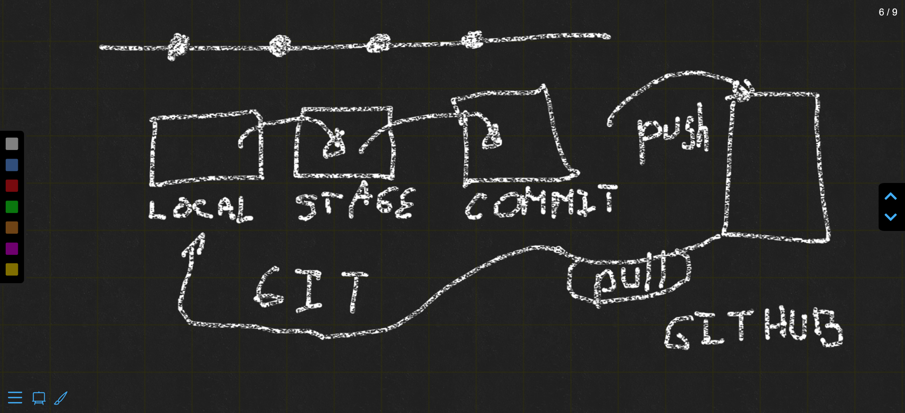

Módulo 0: Git/Github
Introducción a Git y Control de Versiones.
Git es un sistema de control de versiones distribuido que permite rastrear cambios en el código de forma eficiente.
El control de versiones es esencial para mantener un historial de los cambios realizados en un proyecto y facilitar la colaboración en equipo.
Configuración de un Repositorio en GitHub
GitHub es una plataforma de alojamiento de repositorios Git en la nube.
Crea una cuenta en GitHub si no tienes una.
Para configurar un nuevo repositorio en GitHub, sigue las instrucciones en la página web.
Uso Básico de Comandos de Git.
Flujo básico de git.

En la imágen anterior se describe el proceso básico para pasar de Local a Stage, de Stage a Commit y de Commit a Github y/o Cloud.
Clonar un repositorio existente desde GitHub a tu máquina local:
git clone url_repositorioCrear una nueva rama para trabajar en una funcionalidad específica:
git checkout -b nombre_ramaHacer commits para guardar los cambios realizados:
git add archivo_modificado.py
git commit -m "Mensaje del commit"Fusionar Ramas y Resolución de Conflictos
Cambiar a la rama principal:
git checkout mainFusionar una rama con la rama principal:
git merge nombre_ramaResolver conflictos que puedan surgir durante la fusión.
Colaboración en un Proyecto Utilizando GitHub
Para colaborar en un proyecto en GitHub, realiza lo siguiente:
Haz un Fork del repositorio original en tu cuenta de GitHub.
Clona tu Fork a tu máquina local.
Crea una nueva rama para realizar tus cambios.
Hace commits en tu rama.
Envía un Pull Request al repositorio original para que los colaboradores revisen tus cambios y los fusionen.
Ejercicio práctico:
Configurar un Repositorio y Realizar Cambios
- Crea un nuevo repositorio en GitHub.
- Clona el repositorio a tu máquina local con el comando git clone url_repositorio.
- Crea una nueva rama con el comando git checkout -b nombre_rama.
- Realiza cambios en tus archivos y haz commits con git add y git commit.
- Cambia a la rama principal con git checkout main.
- Fusiona tu rama con la rama principal con git merge nombre_rama.
- Envía tus cambios al repositorio en GitHub con git push origin main.
¡Excelente! Ahora has aprendido los conceptos básicos de Git y GitHub, así como cómo configurar un repositorio y colaborar en un proyecto utilizando esta plataforma. En los próximos módulos, abordaremos el desarrollo web con Django.
Resolución del Ejercicio Práctico
Configurar un Repositorio y Realizar Cambios en el Proyecto Blog
En este ejercicio, configuraremos un repositorio Git para el proyecto del blog que vamos a dearrollar en los módulos 1 al 4. Luego, haremos algunos cambios en el proyecto y realizaremos commits para registrar esos cambios en el historial de versiones.
Paso 1: Configurar el repositorio en GitHub
Abre tu cuenta de GitHub y haz clic en el botón “New” para crear un nuevo repositorio.
Asigna un nombre al repositorio y configura la visibilidad como desees.
Opcionalmente, puedes agregar una descripción y una licencia.
Haz clic en “Create repository” para crear el repositorio en GitHub.
Paso 2: Clonar el repositorio en tu máquina local
Copia la URL del repositorio que acabas de crear en GitHub (se verá como https://github.com/tu_usuario/nombre_repositorio.git).
Abre una terminal o línea de comandos en la carpeta donde deseas clonar el repositorio.
Utiliza el siguiente comando para clonar el repositorio en tu máquina local:
git clone url_repositorioReemplaza “url_repositorio” con la URL que copiaste en el paso 1.
Paso 3: Realizar cambios en el proyecto del blog
Abre el proyecto del blog en tu editor de código o IDE favorito.
Realiza algunos cambios en los archivos de tu proyecto, como agregar nuevas funcionalidades, modificar plantillas o corregir errores.
Paso 4: Hacer commits para registrar los cambios
Después de hacer cambios en el proyecto, utiliza los siguientes comandos para hacer commit y registrar esos cambios en el historial de versiones:
git add .
git commit -m "Mensaje descriptivo del commit"El comando git add . agrega todos los cambios realizados en los archivos del proyecto al área de preparación, y el comando git commit -m “Mensaje” crea un nuevo commit con un mensaje descriptivo para los cambios realizados.
Paso 5: Enviar los cambios al repositorio en GitHub
Después de hacer commit de los cambios en tu repositorio local, utiliza el siguiente comando para enviar los cambios al repositorio en GitHub:
git push origin main` Reemplaza “main” con el nombre de la rama principal de tu proyecto si utilizas otro nombre diferente.
¡Felicitaciones! Ahora has configurado un repositorio Git para tu proyecto y has realizado cambios en el proyecto, registrando esos cambios mediante commits.
Los cambios ahora están disponibles en el repositorio en GitHub. Puedes repetir estos pasos cada vez que desees realizar cambios en el proyecto y mantener un historial de versiones de tu proyecto en GitHub.